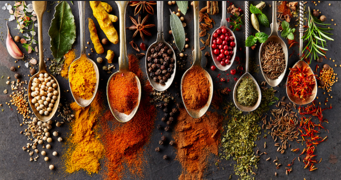

About us
At Southern Spices, we believe food is more than just sustenance—it's a way of preserving tradition and bringing people together. Inspired by the rich culinary heritage of South India, our restaurant is a celebration of authentic flavors, time-honored recipes, and the vibrant culture behind every dish.
Our journey began in a modest kitchen, where family recipes were passed down through generations. With a deep love for cooking and a dream to share our roots with the world, Southern Spices was born. What started as a small eatery quickly became a cherished space for those seeking warmth, comfort, and unforgettable taste.
Today, we take pride in offering a menu that reflects both tradition and creativity. Every meal is crafted with handpicked spices and fresh ingredients, staying true to our heritage while embracing a modern dining experience. Whether you're here for a quick bite or a family feast, you're always part of our story.
